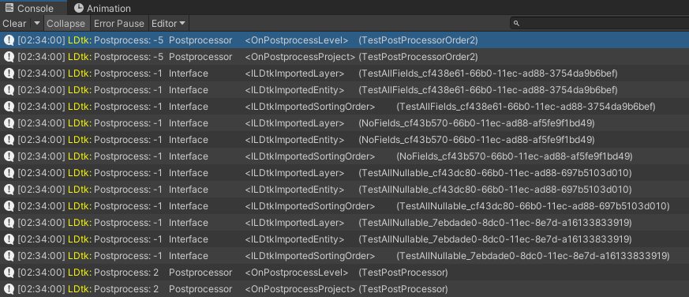

Custom Importing
When importing a LDtk project, there may be a specific customization needed on an imported project.
LDtkPostprocessor
Inspired by Unity's own workflow, this lets you hook into the import pipeline and run scripts after importing an LDtk project.
This will allow alterations to the import result depending on what is needed for your game.
For example, this could be useful to change a material for some tilemap renderers, or to give entities a tag for a specific level.
To use this, create a class that inherits from LDtkPostprocessor, and then override any of the two methods:
Note:
- LDtkPostprocessor is in the
LDtkUnity.Editornamespace, so remember to keep any files inheriting from this to be contained in an editor folder, or have the script contained within an editor-only assembly definition. - When traversing the transform hierarchy, it's common for the hierarchy to change depending on how the project changes. For example:
- Worlds, levels, and layers have a UUID appended to the end of their GameObject name to maintain identifier uniqueness in the import hierarchy.
- The Levels will restructure depending on the ordering of the levels in the LDtk project.
- The number of IntGrid value tilemaps may grow and shrink if IntGrid tile assets change their Layer, Tag, or Physics material.
- The number of AutoLayer tilemaps will grow and shrink depending on how many tiles occupy the same position.
using LDtkUnity;
using LDtkUnity.Editor;
using UnityEngine;
public class ExamplePostprocessor : LDtkPostprocessor
{
protected override void OnPostprocessProject(GameObject root)
{
Debug.Log($"Post process LDtk project: {root.name}");
foreach (Transform world in root.transform)
{
foreach (Transform level in world)
{
foreach (Transform layer in level)
{
foreach (Transform tilemapOrEntity in layer)
{
//Iterate upon any children of the root
}
}
}
}
}
protected override void OnPostprocessLevel(GameObject root, LdtkJson projectJson)
{
Debug.Log($"Post process LDtk level: {root.name}");
}
}
Import Event Interfaces
In the import hierarchy, any level/entity prefab instances with custom MonoBehaviours inheriting these interfaces can trigger functions during the project import process.
For example, These could be useful to immediately set serialized fields in a component instead of getting them in runtime, or to utilise the sorting order of entity prefabs to render between layers.
Level/Entities:
Level:
Entities:
using LDtkUnity;
using UnityEngine;
public class ExampleLabel : MonoBehaviour, ILDtkImportedFields
{
[SerializeField] private TextMesh _textMesh;
//This class inherits from ILDtkImportedFields, which implements OnLDtkImportedFields.
//This LDtk entity has a string field named "text" and a color field named "color".
public void OnLDtkImportFields(LDtkFields fields)
{
_textMesh.text = fields.GetString("text");
_textMesh.color = fields.GetColor("color");
}
}
Ordering
- The LDtkPostprocessor and the interface events will all invoke at the end of the import process, so all GameObjects are freely accessible at this point in time.
- By default, the import interfaces are processed first (priority 0) and then the Postprocessors after. (priority 1)
However, you can change the order at which each import interface and post processor is run with their GetPostprocessOrder values respectively.
LDtkPostprocessor.GetPostprocessOrder
ILDtkImported.GetPostprocessOrder
 You can view these logs by enabling verbose logging in the Preferences.